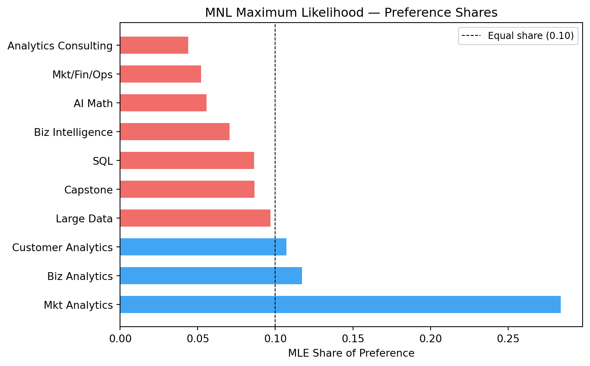
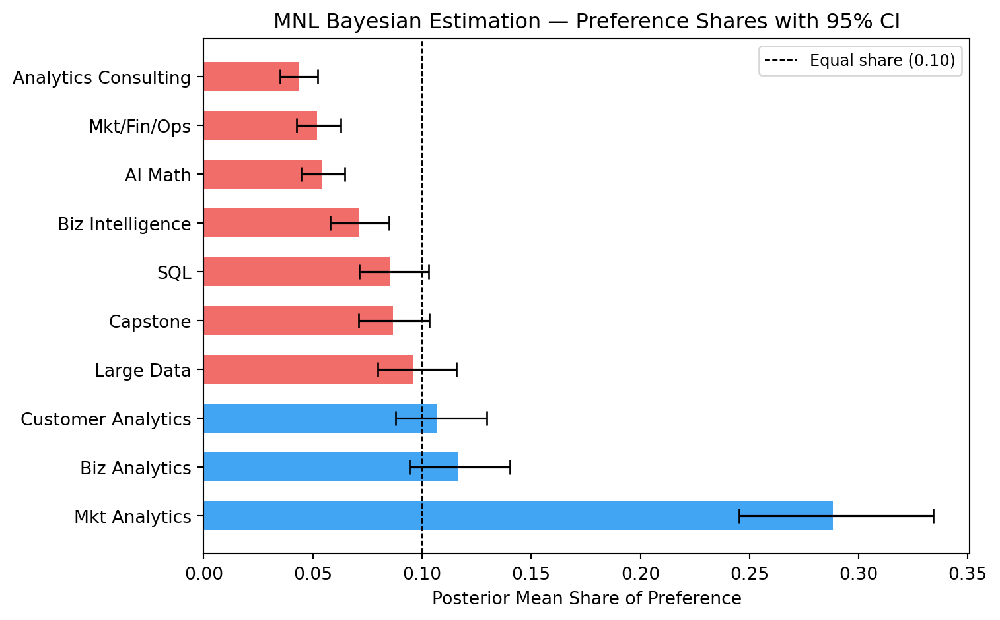
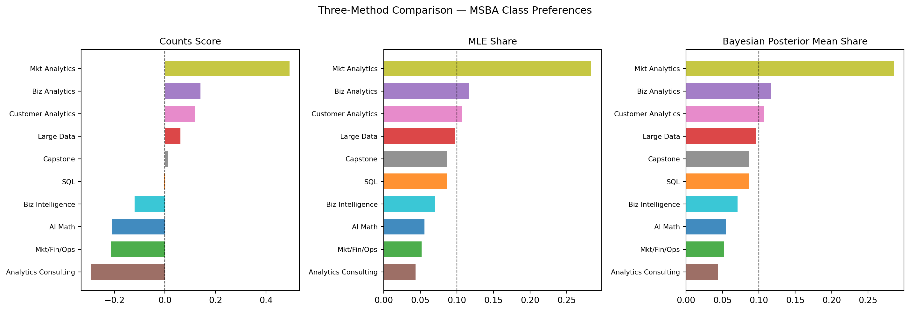

Counts, MLE, and Bayesian estimation of the MNL model
Author
Fancheng
Published
June 14, 2026
Introduction
MaxDiff (also called Best-Worst Scaling) is a survey methodology for measuring how strongly people prefer one item over another. On each screen of the survey, the respondent sees a small subset of items — here, four — and selects the most-preferred and least-preferred item from that subset. This process repeats over many screens, gradually building a picture of each respondent’s preference ordering across all items.
Why MaxDiff rather than a simple 1–10 rating scale? Humans are good at trade-offs — picking a best and a worst from a small set — but notoriously unreliable at calibrating numeric scales across people and time. MaxDiff forces real differentiation between items and avoids the scale-use bias that plagues Likert-style questions.
In this assignment, the 10 items are the 10 core MSBA classes at UCSD Rady. Our goal is to estimate students’ relative preference for each class using three methods of increasing sophistication:
A simple counts analysis — the percentage of times each class was picked best, minus the percentage of times it was picked worst.
The Multinomial Logit (MNL) model fit by Maximum Likelihood Estimation (MLE), which models the underlying choice process explicitly.
The same MNL model fit by Bayesian methods via a Metropolis-Hastings MCMC sampler, which adds a prior distribution and yields full posterior uncertainty.
The three methods should broadly agree on which classes are most and least preferred. They will differ in how they quantify the strength of preference and how they communicate uncertainty — particularly in the middle of the ranking, where items are close together.
Respondents (N) : 85
Tasks per respondent (T): 8
Items per task (J) : 4
Total distinct items : 10
Total tasks : 680
Note: the raw data contains a phantom “Item 11” with no label, appearing in truncated tasks of only 2 rows. These tasks are excluded — every retained task has exactly 4 rows, one best pick, and one worst pick.
Code
# ── Sanity check ───────────────────────────────────────────────────────────────g = df.groupby(["Record ID", "Task"])best_counts = g.apply(lambda x: (x["Response"] ==1).sum())worst_counts = g.apply(lambda x: (x["Response"] ==-1).sum())print("Every task has exactly one best :", (best_counts ==1).all())print("Every task has exactly one worst:", (worst_counts ==1).all())
Every task has exactly one best : True
Every task has exactly one worst: True
Item label times_shown
1 AI Math 273
2 SQL 274
3 Mkt/Fin/Ops 272
4 Large Data 276
5 Biz Analytics 270
6 Analytics Consulting 267
7 Customer Analytics 276
8 Capstone 272
9 Mkt Analytics 274
10 Biz Intelligence 266
Because this is a balanced MaxDiff design, each item is shown a roughly equal number of times (~272 appearances each across all respondents and tasks).
Counts Analysis
The counts analysis is the simplest summary of MaxDiff data. For each item \(j\), we compute:
where \(\%\text{best}_j\) is the fraction of times item \(j\) was picked best out of the times it was shown, and similarly for worst. A score near +1 means the item is almost always chosen as best; near −1, almost always chosen as worst; near 0, the item is middle-of-the-pack or polarizing.
Observations: Marketing Analytics (MGTA 495) stands out as the clear top preference, with a large positive counts score. Customer Analytics (MGTA 455) and Large Data (MGTA 452) also rank highly. At the bottom, Analytics Consulting (MGTA 444) and the AI Math/Programming course (MGTA 403) are most frequently chosen as worst. SQL sits near the middle, while Mkt/Fin/Ops is closer to the lower end of the ranking. The bootstrap confidence intervals confirm that the top and bottom rankings are statistically reliable, while the middle cluster shows more overlap.
From MaxDiff Data to MNL Choices
Before fitting an MNL, we need to explain how the MaxDiff survey data converts into choice observations. The MNL model assigns each item \(j\) a utility coefficient \(\beta_j\). For a task showing items \(\{a, b, c, d\}\), the probability that item \(b\) is picked best follows the softmax:
After the best is identified, the worst is picked from the remaining 3 items — but with flipped utilities, since we are now modeling “least preferred”:
\[P(\text{worst} = c \mid \text{best} = b) = \frac{\exp(-\beta_c)}{\exp(-\beta_a) + \exp(-\beta_c) + \exp(-\beta_d)}\]
So each task yields two MNL observations: the best-pick from all 4 items, and the worst-pick from the remaining 3.
Identifiability: The softmax is invariant to adding a constant to every \(\beta\), so only \(J - 1 = 9\) of the 10 coefficients are identified. We fix \(\beta_1 = 0\) (MGTA 403 as reference) and estimate \(\beta_2, \ldots, \beta_{10}\).
where \(j^*_b\) is the best-picked item and \(j^*_w\) is the worst-picked item in that task. We use the log-sum-exp trick throughout for numerical stability.
Item Label beta SE share
9 Mkt Analytics 1.630 0.146 0.284
5 Biz Analytics 0.744 0.142 0.117
7 Customer Analytics 0.656 0.142 0.107
4 Large Data 0.555 0.140 0.097
8 Capstone 0.443 0.140 0.087
2 SQL 0.438 0.137 0.086
10 Biz Intelligence 0.236 0.137 0.070
1 AI Math 0.000 NaN 0.056
3 Mkt/Fin/Ops -0.067 0.139 0.052
6 Analytics Consulting -0.239 0.141 0.044
Code
# ── Plot MLE shares ────────────────────────────────────────────────────────────fig, ax = plt.subplots(figsize=(8, 5))colors_mle = ["#2196F3"if s > shares_mle.mean() else"#EF5350"for s in mle_df["share"]]ax.barh(range(len(mle_df)), mle_df["share"], color=colors_mle, alpha=0.85, height=0.6)ax.set_yticks(range(len(mle_df)))ax.set_yticklabels(mle_df["Label"], fontsize=10)ax.axvline(1/10, color="black", linewidth=0.8, linestyle="--", label="Equal share (0.10)")ax.set_xlabel("MLE Share of Preference")ax.set_title("MNL Maximum Likelihood — Preference Shares")ax.legend(fontsize=9)plt.tight_layout()plt.show()

Comparison with counts: The MLE ranking is nearly identical to the counts ranking at the top and bottom. Marketing Analytics (MGTA 495) again dominates with a share of ~0.28, far above the uniform 0.10 baseline. The MLE adds precision — standard errors quantify how uncertain each estimate is — and explicitly accounts for the context in which each item appeared (which other items it competed against), which the simple counts method ignores.
MNL via Bayesian Estimation
The Bayesian approach specifies a prior over \(\boldsymbol{\beta}\) and combines it with the likelihood to obtain a posterior:
We use a weakly informative prior: \(\beta_j \sim N(0, 10)\) for each of the 9 free parameters. This places 95% of prior probability in \([-6.2, 6.2]\), which is very diffuse relative to the MLE estimates.
We draw from the posterior using a random-walk Metropolis-Hastings sampler: at each step, we propose \(\boldsymbol{\beta}^* = \boldsymbol{\beta} + \epsilon\) where \(\epsilon \sim N(\mathbf{0}, \sigma^2 I)\), and accept with probability \(\min(1,\; e^{\log\pi(\boldsymbol{\beta}^*) - \log\pi(\boldsymbol{\beta})})\).
The chains show the characteristic “fuzzy caterpillar” pattern after burn-in, indicating the sampler has mixed well. There is no visible drift or slow wandering.
# ── Plot Bayesian shares with CIs ──────────────────────────────────────────────fig, ax = plt.subplots(figsize=(8, 5))y_pos =range(len(bayes_df))colors_b = ["#2196F3"if s > shares_post.mean() else"#EF5350"for s in bayes_df["share"]]ax.barh(y_pos, bayes_df["share"], color=colors_b, alpha=0.85, height=0.6)ax.errorbar( bayes_df["share"], y_pos, xerr=[bayes_df["share"] - bayes_df["share_lo"], bayes_df["share_hi"] - bayes_df["share"]], fmt="none", color="black", capsize=4, linewidth=1.2)ax.set_yticks(list(y_pos))ax.set_yticklabels(bayes_df["Label"], fontsize=10)ax.axvline(1/10, color="black", linewidth=0.8, linestyle="--", label="Equal share (0.10)")ax.set_xlabel("Posterior Mean Share of Preference")ax.set_title("MNL Bayesian Estimation — Preference Shares with 95% CI")ax.legend(fontsize=9)plt.tight_layout()plt.show()

Comparison to MLE: The posterior means closely track the MLE point estimates, as expected with 680 tasks of data — the likelihood dominates the weakly informative prior. The posterior standard deviations are very close to the MLE standard errors. The key advantage of the Bayesian approach is that credible intervals on derived quantities (like preference shares) arise naturally by pushing every MCMC draw through the softmax — no delta method required.
# ── Side-by-side bar charts ────────────────────────────────────────────────────# Use consistent color for each class across panelsitems_ordered =cmp["Item"].valuespalette = plt.cm.tab10(np.linspace(0, 1, 10))color_map = {item: palette[i] for i, item inenumerate(range(1, 11))}fig, axes = plt.subplots(1, 3, figsize=(15, 5))# Panel 1: Countscnts =cmp.sort_values("counts_score", ascending=True)axes[0].barh(range(10), cnts["counts_score"], color=[color_map[i] for i in cnts["Item"]], alpha=0.85, height=0.7)axes[0].set_yticks(range(10))axes[0].set_yticklabels(cnts["Label"], fontsize=8)axes[0].set_title("Counts Score", fontsize=11)axes[0].axvline(0, color="black", linewidth=0.8, linestyle="--")# Panel 2: MLEmle_s =cmp.sort_values("mle_share", ascending=True)axes[1].barh(range(10), mle_s["mle_share"], color=[color_map[i] for i in mle_s["Item"]], alpha=0.85, height=0.7)axes[1].set_yticks(range(10))axes[1].set_yticklabels(mle_s["Label"], fontsize=8)axes[1].set_title("MLE Share", fontsize=11)axes[1].axvline(0.10, color="black", linewidth=0.8, linestyle="--")# Panel 3: Bayesbay_s =cmp.sort_values("bayes_share", ascending=True)axes[2].barh(range(10), bay_s["bayes_share"], color=[color_map[i] for i in bay_s["Item"]], alpha=0.85, height=0.7)axes[2].set_yticks(range(10))axes[2].set_yticklabels(bay_s["Label"], fontsize=8)axes[2].set_title("Bayesian Posterior Mean Share", fontsize=11)axes[2].axvline(0.10, color="black", linewidth=0.8, linestyle="--")fig.suptitle("Three-Method Comparison — MSBA Class Preferences", fontsize=12, y=1.01)plt.tight_layout()plt.show()

Discussion: The three methods agree strongly on the top and bottom of the ranking. Marketing Analytics (MGTA 495) is the clear winner under all three methods, and Analytics Consulting (MGTA 444) and AI Math (MGTA 403) consistently sit at the bottom. Disagreements arise in the middle cluster — SQL, Mkt/Fin/Ops, and Business Intelligence — where differences in utility are small enough that sampling noise can flip adjacent ranks.
The MNL models add two things beyond counts. First, they account for the competitive context of each task: every item that was shown but not picked provides information (an implicit “not this one”), which the simple count ignores. Second, they place all items on a common utility scale (the \(\beta\) coefficients) and derive shares that are interpretable as market-like probabilities.
Bayes adds one more layer over MLE: credible intervals on derived quantities like shares of preference. To get confidence intervals on shares from MLE, one would need the delta method, a non-trivial calculation. With MCMC, it is effortless — just apply the softmax to every posterior draw and take quantiles.
Discussion
Substantive finding: MSBA students most strongly prefer Marketing Analytics (MGTA 495, Yavorsky) and Customer Analytics (MGTA 455, Nijs) — both of which are elective-style, applied analytics courses with direct career relevance. Large Data (MGTA 452) also ranks highly, likely because data engineering skills are highly valued in the job market. At the other end, Analytics Consulting, Mkt/Fin/Ops, and AI Math form the lowest-ranked group, perhaps because students view them as less directly applicable or enjoyable relative to the rest of the curriculum.
Methodological takeaways:
Counts analysis is fast and transparent — a good first pass or executive summary. It requires no modeling assumptions.
MLE MNL is rigorous and provides point estimates with classical standard errors. It is the right tool when you need a single number to report or compare across groups.
Bayesian MNL shines when you need uncertainty on derived quantities (preference shares, market simulations, rank probabilities), want to propagate uncertainty through downstream decisions, or plan to extend the model to estimate individual-level preferences (hierarchical Bayes).
Caveats: The sample is self-selected MSBA students surveyed at a single point in time. Responses likely reflect where students are in the program, their career goals, and prior coursework — none of which are controlled for here. Preferences may also shift as the curriculum evolves.
Next steps: With more time, I would fit a hierarchical Bayes (HB) model to estimate individual-level \(\beta_i\) vectors, which would reveal whether there are latent preference segments (e.g., students headed to tech vs. finance vs. consulting). I would also explore whether preferences vary by cohort year or prior work experience.